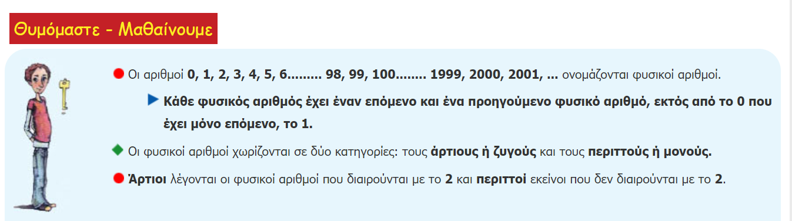

Κεφάλαιο 1
Α.1.1. Φυσικοί αριθμοί - Διάταξη Φυσικών - Στρογγυλοποίηση
Μαθησιακοί Στόχοι:
Επανάληψη της έννοιας των φυσικών αριθμών και της διάταξής τους.
Κατανόηση της σημασίας της σωστής διάταξης των αριθμών σε διάφορα πλαίσια.
η εξοικείωση του εκπαιδευόµενου µε τους φυσικούς αριθµούς και η δυνατότητά του να εκτελέσει περίπλοκες πράξεις, προκειµένου να ασχοληθεί στη συνέχεια µε πιο σύνθετες µαθηµατικές έννοιες , όπως κλάσµατα και ποσοστά.
Εισαγωγή
Η οικογένεια Σωτηρίου έφυγε για µία εκδροµή στην ∆υτική Ελλάδα. Ο χιλιοµετρητής του αυτοκινήτου τους έδειχνε ογδόντα δύο χιλιάδες τριακόσια ενενήντα τέσσερα χιλιόµετρα. Αφού ταξίδεψαν διακόσια πέντε χιλιόµετρα έφτασαν στη γέφυρα Ρίου – Αντιρρίου όπου έκαναν µια σύ- ντοµη στάση για καφέ και πρωινό. Πλήρωσαν είκοσι οκτώ ευρώ (€). Συνέχισαν το ταξίδι τους και µετά από πέντε ώρες έφτασαν στα Γιάννενα. Έµειναν σε ξενοδοχείο που τους χρέωσε εκατόν σαράντα τέσσερα €. Στο προηγούµενο κείµενο συναντήσαµε τους αριθµούς: 82394, 205, 28, 5, 144 Τέτοιοι αριθµοί ονοµάζονται φυσικοί αριθµοί και για να τους γράψουµε χρησιµοποιούµε τα εξής δέκα ψηφία: 0, 1, 2, 3, 4, 5, 6, 7, 8, 9 Η αξία των ψηφίων ενός φυσικού αριθµού σε απλές µονάδες εξαρτάται από τη θέση των ψηφίων στο αριθµό.
{kind=link}